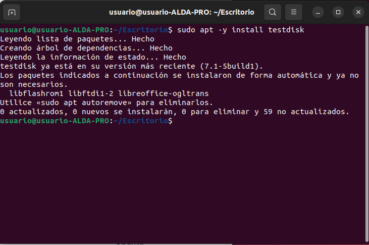
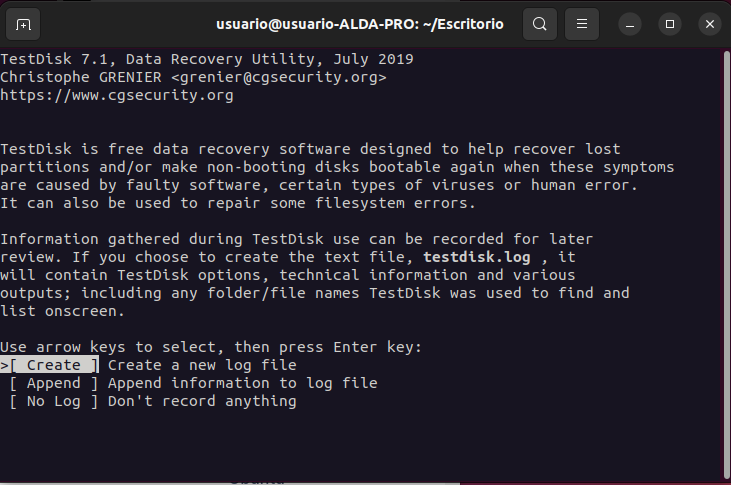

La instalación de este programa es algo más compleja, así como su uso
El problema de usar TestDisk es que su instalación y uso no son tan intuitivas como otros pogramas.
Para instalarlo, deberemos abrir una terminal y ejecutar el siguiente comando.
Una vez finalizada la instalación, solamente debemos escribir "testdisk" en la terminal, quedando de la siguiente forma:
Para salir, pulsamos control c o cerramos la terminal